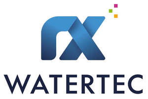

Trade Mark Journal No.2025/013 28 March 2025
UK00004161330 17 February 2025 (1,6,7,9,11,17,19,35,37,42)

International priority date claimed: 24 January 2025
(European Union Intellectual Property Office (EUIPO))
(019135726)
- Class 1
- Filter aids for purification of liquids; filter materials made from chemical substances; filter materials (chemical, mineral, vegetable and other materials in raw state); filter materials made from vegetable substances; filter materials made from mineral substances; mineral substances for filtering; phosphates for drinking water treatment; inorganic precipitants for purification of drinking water; chemical products for treatment of drinking water.
- Class 6
- Metal building materials; transportable buildings of metal; rail construction materials of metal; metal pipes; metallic sewer pipes; ironmongery and small items of metal hardware; metal grilles and gratings; metal frames for building purposes; metal gutters and gutter covers; metal pipe elbows; metal water traps and gullies; clamps; metal junctions for pipelines; metal closure caps; metal drainage pipes; metal rainwater drains; metal drain channels; metal cable ducts for electric cables; metal sewage and waste pipes; metal flap valves for water conduits; metal clamps for pipes; metal connectors for pipes; metal valves for regulating flow of liquid in pipelines; metal non-return valves (other than parts of machines); metal valves for water conduits; metal valves and slide valves (other than parts of machines).
- Class 7
- Pumps; pump systems; control valves for pumps; drainage machines; electric water pumps; waste water pumps; distributor pumps; liquid separators; gate valves; shut-off valves of plastic (parts of machines); metal shut-off valves (parts of machine); shut-off valves (parts of machines); drives for valves; drives for machines.
- Class 9
- Detectors for electrical measuring instruments; electrical sensors; electrical monitoring control apparatus; remote temperature indicators; humidity sensors; level detectors; level sensors; remote monitoring equipment; oil-water level gauges; particle detectors; process checking equipment; sensors, detectors and monitoring instruments and apparatus; sensors for plant control; Internet of Things (IoT) sensors; water level detectors; software; software packages; data-processing software; sensor system software; server software; network software; on-line messaging software; communications server software; communications software; communications networks; communications modems; communications apparatus; communications transmission equipment; communications controllers; communications interface units; electronic communications installations; communications equipment; wired communications apparatus; wire-free communications apparatus; point-to-point communications apparatus; electrical measuring instruments; electronic measuring probes; electronic measuring instruments; electronic measuring instruments for taps; electronic rain gauges; humidity measuring instruments; level measuring instruments; hygrometers (moisture meters); measuring instruments and apparatus; level meters; flow meters; temperature measuring instruments and apparatus; automatic control equipment; digital electronic control apparatus; electrical throughflow controllers; electrical remote control apparatus; electrical checking equipment; electrical process control apparatus; electrical controllers for automatic slide valves; electrical regulators; electrical regulating valves; electrical timers; electrical valve controllers; electrical control valves; electronic regulators; electronic controllers for automatically operating valves; pneumatic control apparatus; programmable control apparatus; control apparatus for sensors; controllers for servomotors; data recording apparatus; area sensors; alarm sensors; detectors; digital sensor apparatus; optical sensors; digital weather stations.
- Class 11
- Waste-water treatment plants; waste-water filters; waste-water duct systems; waste-water purification plants; water purification plants; shut-off valves as safety apparatus for water equipment; shut-off valves for water regulation; pressure limiting valves (safety devices) for water conduits; pressure regulators for water conduits; pressure monitoring apparatus (safety equipment for water conduits); ball valves; regulating valves for water conduits; regulating apparatus as parts of water ducts; regulating apparatus for water systems; safety valves for water conduits; safety valves for water conduits; temperature regulating valves (parts of water supply systems); pressure relief valves (safety equipment) for water conduits; water pressure reducers (regulating fittings); water pressure reducers (safety fittings); water regulating valves (regulating fittings); water regulating valves (safety fittings); apparatus for filtering drinking water; water purification apparatus for preparation of drinking water; filters for drinking water.
- Class 17
- Waterproof sealants; articles and materials for waterproofing and moisture-proofing; sealing compounds; joint sealants for building purposes; claddings for pipes, not of metal; seals, sealants and fillers; sealing elements, not of metal; pipe joint sealing compounds; sealing strips, not of metal; sealants for pipes; pipe connectors; seal sets for valves; flexible conduits, pipes, hoses and connectors therefor (including valves) and connectors for rigid pipes, none of metal; flexible pipes (not of metal); fittings for pipes, not of metal; flexible hoses of rubber; flexible hoses of plastic; rubber flaps (rubber valves); insulating materials for pipes; insulating materials for underground pipes and tanks; rubber flap valves; conduit reinforcements, not of metal; porous irrigation hoses, not of metal; hoses, not of metal, for irrigation purposes.
- Class 19
- Non-metallic building materials; drainage pipes; water conduits; water traps; trenches; gutters; water storage tanks; slabs and slab coverings; pipelines; caissons for underwater construction; grilles and gratings; gutter covers; quarry slabs; concrete components; concrete gutters and edgings; floor drain channels, not of metal; floor drains, not of metal; drainage pipes, not of metal; roof gutters, not of metal; gutters, not of metal; gutters (not of metal) for collecting waste water; gutters (not of metal) for distributing rainwater; gutters (not of metal) for collecting rainwater; gutters (not of metal) for distributing waste water; mounts for gutters, not of metal; drain gutters, not of metal; concrete pipes; flap valves for drainage pipes, not of metal or plastic; flap valves, not of metal or plastic, for water conduits; manhole covers, not of metal; lawn gratings, not of metal; all the foregoing goods not of metal.
- Class 35
- Wholesale services relating to filter aids for purification of liquids, filter materials made from chemical substances, filter materials (chemical, mineral, vegetable and other materials in raw state), filter materials made from vegetable substances, filter materials made from mineral substances, mineral substances for filtering, phosphates for drinking water treatment, inorganic precipitants for purification of drinking water, chemical products for treatment of drinking water, metal building materials, transportable buildings of metal, rail construction materials of metal, metal pipes, metallic sewer pipes, ironmongery and small items of metal hardware, metal grilles and gratings, metal frames for building purposes, metal gutters and gutter covers, metal pipe elbows, metal water traps and gullies, clamps, metal junctions for pipelines, metal closure caps, metal drainage pipes, metal rainwater drains, metal drain channels, metal cable ducts for electric cables, metal sewage and waste pipes, metal flap valves for water conduits, metal clamps for pipes, metal connectors for pipes, metal valves for regulating flow of liquid in pipelines, metal non-return valves (other than parts of machines), metal valves for water conduits, metal valves and slide valves (other than parts of machines), pumps, pump systems, control valves for pumps, drainage machines, electric water pumps, waste water pumps, distributor pumps, liquid separators, gate valves, shut-off valves of plastic (machine parts), metal shut-off valves (machine parts), shut-off valves (machine parts), drives for valves, drives for machines, detectors for electrical measuring instruments, electrical sensors, electrical monitoring control apparatus, remote temperature indicators, humidity sensors, level detectors, level sensors, remote monitoring equipment, oil-water level gauges, particle detectors, process checking equipment, sensors, detectors and monitoring instruments and apparatus, sensors for plant control, Internet of Things (IoT) sensors, water level detectors, software, software packages, data-processing software, sensor system software, server software, network software, on-line messaging software, communications server software, communications software, communications networks, communications modems, communications apparatus, communications transmission equipment, communications controllers, communications interface units, electronic communications installations, communications equipment, wired communications apparatus, wire-free communications apparatus, point-to-point communications apparatus, electrical measuring instruments, electronic measuring probes, electronic measuring instruments, electronic measuring instruments for taps, electronic rain gauges, humidity measuring instruments, level measuring instruments, hygrometers (moisture meters), measuring instruments and apparatus, level meters, flow meters, temperature measuring instruments and apparatus, automatic control equipment, digital electronic control apparatus, electrical throughflow controllers, electrical remote control apparatus, electrical checking equipment, electrical process control apparatus, electrical controllers for automatic slide valves, electrical regulators, electrical regulating valves, electrical timers, electrical valve controllers, electrical control valves, electronic regulators, electronic controllers for automatically operating valves, pneumatic control apparatus, programmable control apparatus, control apparatus for sensors, controllers for servomotors, data recording apparatus, area sensors, alarm sensors, detectors, digital sensor apparatus, optical sensors, digital weather stations, waste-water treatment plants, waste-water filters, waste water duct systems, waste-water purification plants, water purification plants, shut-off valves as safety apparatus for water equipment, shut-off valves for water regulation, pressure limiting valves (safety devices) for water conduits, pressure regulators for water conduits, pressure monitoring apparatus (safety equipment for water conduits), ball valves, regulating valves for water conduits, regulating apparatus as parts of water ducts, regulating apparatus for water systems, safety fittings for water conduits, safety valves for water conduits, temperature regulating valves (parts of water supply systems), pressure relief valves (safety equipment) for water conduits, water pressure reducers (regulating fittings), water pressure reducers (safety fittings), water regulating valves (regulating fittings), water regulating valves (safety fittings), apparatus for filtering drinking water, water purification apparatus for preparation of drinking water, filters for drinking water, waterproof sealants, articles and materials for waterproofing and moisture-proofing, sealing compounds, joint sealants for building purposes, claddings for pipes, not of metal, seals, sealants and fillers, sealing elements, not of metal, pipe joint sealing compounds, sealing strips, not of metal, sealants for pipes, pipe connectors, seal sets for valves, flexible conduits, pipes, hoses and connectors therefor (including valves) and connectors for rigid pipes, none of metal, flexible pipes, not of metal, fittings for pipes, flexible hoses of rubber, flexible hoses of plastic, rubber flaps (rubber valves), insulating materials for pipes, insulating materials for underground pipes and tanks, rubber flap valves, conduit reinforcements, not of metal, porous irrigation hoses, not of metal, hoses for irrigation purposes, not of metal, non-metallic building materials, drainage pipes, water conduits, water traps, trenches, gutters, water storage tanks, slabs and slab coverings, pipelines, caissons for underwater construction, grilles and gratings, gutter covers, quarry slabs, concrete components, concrete gutters and edgings, floor drain channels, not of metal, floor drains, not of metal, drainage pipes, not of metal, roof gutters, not of metal, gutters, not of metal, gutters for collecting waste water, gutters for distributing rainwater, not of metal, gutters for collecting rainwater, not of metal, gutters for distributing waste water, not of metal, mounts for gutters, not of metal, drain gutters, not of metal, concrete pipes, flap valves for drainage pipes, not of metal or plastic, flap valves for water conduits, not of metal or plastic, manhole covers, not of metal, and lawn grating, not of metal.
- Class 37
- Construction; installation of floor coverings; building, assembling and demolition work; excavation of soil; construction of pipelines; construction of underground structures; construction services; construction management (construction supervision); repair of drains; laying of pipelines; maintenance and repair of pipelines; maintenance and repair of pipeline systems; maintenance of waste-water pipes; installation and maintenance of pipelines; renovation of drain conduits; installation of drain conduits; maintenance and repair of drain pipes; construction of drainage systems; underground construction work relating to laying of drainage pipes; installation, repair and maintenance of drainage systems; setting up, maintenance and repair of computer hardware; installation, repair and maintenance of computers and computer peripherals; installation of hardware and lines for Internet access; installation of communications hardware; installation of communications equipment; installation, maintenance and repair of computer network equipment and information-technology equipment; maintenance and repair of data communications networks; maintenance of data-processing equipment; anti-corrosion treatment; plant renovation; concrete maintenance; drilling work; renewal of electrical lines; fault elimination in electrical systems; moisture-proofing; installation of electrical lines; installation of electrical equipment; installation of rainwater harvesting systems; installation of technical equipment; installation of environmental systems; installation of water conduits; cable laying; insulation of pipelines; repair of pumps.
- Class 42
- Engineering services; engineering work; engineering services relating to data-processing; technical project planning in engineering; engineering services relating to automatic data-processing; hosting services, software as a service (SaaS) and software rental; updating of computer software; updating of software for embedded apparatus; updating and adapting of data-processing programs to user needs; development and maintenance of software; development of computer software for use with computer-controlled switching systems; development of computer software for use with programmable regulators; design of web portals; creating and maintaining websites for third parties; creation of control programs for automatic measurement, assembly, adaptation and related visualisation; software design and development; providing temporary use of web-based software; cloud computing; electronic data storage and back-up; electronic storage services for archiving electronic data; configuring computer hardware by means of software; information technology (IT) consultancy; civil engineering planning; consultancy services relating to construction; engineering services for others; conducting technical project studies for construction projects; design services in the field of construction; preparation of technical reports by engineers; engineering services related to design of electronic systems; engineering services for the design of constructions; engineering services relating to civil infrastructure; engineering consultancy; development of construction projects; urban planning consultancy; construction planning.
RX-WATERTEC GmbH
Representative: DR WALTHER WOLFF & CO